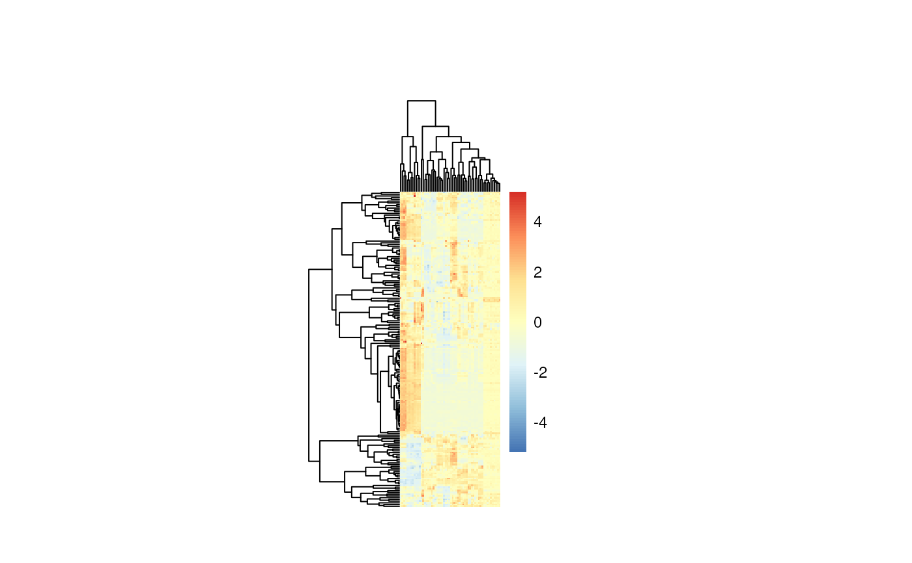

Heatmap visualization
Usage
viz_heatmap(
data,
metadata_info = NULL,
metadata_sample = NULL,
metadata_feature = NULL,
plot_name = "",
scale = "row",
save_plot = "svg",
enforce_featurenames = FALSE,
enforce_samplenames = FALSE,
print_plot = TRUE,
path = NULL
)Arguments
- data
SummarizedExperiment (se) file including assay and colData. If se file is provided, metadata_sample is extracted from the colData of the se object. metadata_feature, if available, are extracted from the rowData. Alternatively provide a DF with unique sample identifiers as row names and metabolite numerical values in columns with metabolite identifiers as column names. Use NA for metabolites that were not detected.
- metadata_info
Optional: NULL or Named vector where you can include vectors or lists for annotation c(individual_Metab= "ColumnName_metadata_feature",individual_Sample= "ColumnName_metadata_sample", color_Metab="ColumnName_metadata_feature", color_Sample= list("ColumnName_metadata_sample", "ColumnName_metadata_sample",...)).Default = NULL
- metadata_sample
Optional: Only required if you did not provide se file in parameter data. Provide DF which contains metadata information about the samples, which will be combined with your input data based on the unique sample identifiers used as rownames. Default = NULL
- metadata_feature
Optional: To provide metadata information for each metabolite. Only used if you did not provide se file in parameter data. Provide DF where the row names must match the metabolite names in the columns of the data. Default = NULL
- plot_name
Optional: String which is added to the output files of the plot
- scale
Optional: String with the information for scale row, column or none. Default = row
- save_plot
Optional: Select the file type of output plots. Options are svg, pdf, png or NULL. Default = "svg"
- enforce_featurenames
Optional: If there are more than 100 features no rownames will be shown, which is due to readability. You can Enforce this by setting this parameter to TRUE. Default = FALSE
- enforce_samplenames
Optional: If there are more than 50 sampless no colnames will be shown, which is due to readability. You can Enforce this by setting this parameter to TRUE. Default = FALSE
- print_plot
Optional: print the plots to the active graphic device.
- path
Optional: String which is added to the resulting folder name default: NULL
Examples
data(intracell_raw_se)
Res <- viz_heatmap(data = intracell_raw_se)
data(intracell_raw)
Intra <- intracell_raw %>% tibble::column_to_rownames("Code")
Res <- viz_heatmap(data = Intra[, -c(1:3)])
